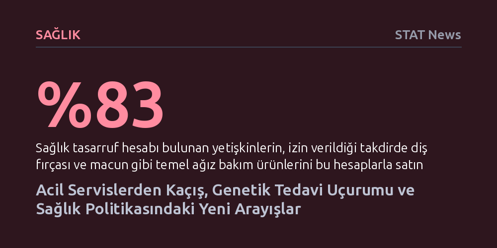

SAGLIK · STAT News · 2026-10-07
Göçmen operasyonları acil servis başvurularını düşürürken, mutasyona özel yeni ilaçlar ölümcül kas hastaları arasında derin bir tedavi uçurumu yaratıyor. Sağlık tasarruf hesaplarının temel bakımı dışlaması ve siyasetteki toksin odaklı yeni yönelimler sağlık krizini büyütüyor.
Sağlık hizmetine erişimin yalnızca tıbbi olanaklarla değil; kolluk baskısı, sigorta mevzuatı ve moleküler mutasyon farklılıkları gibi çok katmanlı engellerle şekillendiğini gösteriyor.

Amerika Birleşik Devletleri genelinde artan göçmenlik operasyonları, kitlesel gözaltılar ve federal kolluk kuvvetleriyle yaşanan ölümcül karşılaşmalar, göçmen topluluklarında derin bir korku iklimi yaratmış durumda. Bu baskı ortamı yalnızca sokaktaki gündelik yaşamı değil, temel insan haklarından biri olan sağlık hizmetlerine erişimi de doğrudan engelliyor. Ülke dışında doğmuş bireyler, acil tıbbi müdahaleye ihtiyaç duysalar dahi hastanelerde yakalanıp sınır dışı edilme endişesiyle sağlık kuruluşlarına başvurmaktan çekiniyor.
Yaratılan bu tedirginlik, hastane acil servis verilerine doğrudan bir düşüş olarak yansıyor. Tıbbi yardım almaktan kaçınan hastaların kronik ve akut rahatsızlıkları tedavi edilmedikçe ilerlerken, sahadaki hekimler durumun ciddiyetine dikkat çekiyor. Minneapolis'te görev yapan bir çocuk doktoru yaşanan tabloyu, "Bakımda muazzam bir kesinti yaşandı" sözleriyle özetleyerek hastaların sağlık sistemine olan güveninin nasıl kırıldığını vurguluyor.
Genetik temelli tedaviler tıp dünyasında büyük heyecan yaratsa da klinik uygulamalardaki teknik sınırlılıklar hastalar arasında sarsıcı eşitsizlikler doğuruyor. Duchenne kas distrofisi (DMD) tanısı alan 13 yaşındaki Yannick ile 12 yaşındaki Brecken’ın dostluğu, bu çıkmazın en somut örneğini oluşturuyor. Ölümcül ve ilerleyici bir kas erimesi hastalığı olan DMD'ye karşı geliştirilen yeni nesil ilaçlar, genetik mutasyonun bulunduğu bölgeyi hedef alarak etki gösteriyor.
Söz konusu tedavi yöntemi, hücrenin protein üretim mekanizmasının kusurlu gen parçasını, yani ekzonu atlayarak işlevsel bir protein üretmesini sağlıyor. Ancak bu mekanizma evrensel bir çözüm sunmuyor; ilacın çalışabilmesi için hastanın genetik mutasyon haritasının ilacın hedefine tam olarak uyması gerekiyor. Bu biyolojik sınır nedeniyle Brecken umut verici ilaca erişebilirken, Yannick tedavi kapsamı dışında kalıyor. Mevzuatın ve biyolojinin koyduğu bu katı engeller, çaresiz kalan hasta ailelerini kendi başlarının çaresine bakmaya itiyor.
ABD'de vergi avantajı sağlayan Sağlık Tasarruf Hesapları (HSA) ve Esnek Harcama Hesapları (FSA), bürokratik tanımların mantık sınırlarını zorladığı bir çelişkiye sahne oluyor. Son kamuoyu araştırmaları, bu hesaplara sahip yetişkinlerin yüzde 83'ünün birikimlerini diş fırçası, diş macunu ve diş ipi gibi en temel koruyucu ağız bakım ürünlerinde kullanmak istediğini ortaya koyuyor. Özellikle genç yetişkinler ve çocuklu aileler bu talebi güçlü biçimde dile getiriyor.
Buna karşın sistem, diş bakım ürünlerini "genel sağlık malzemesi" sınıfına sokarak kapsam dışı tutuyor. Oysa hesap sağlayıcılarının yürüttüğü lobi faaliyetleri sonucunda dağ bisikletleri, akıllı gözlükler, ev tipi saunalar ve hatta radyasyon önleyici iç çamaşırları bu hesaplarla vergiden muaf biçimde satın alınabiliyor. Temel koruyucu ihtiyaçlar reddedilirken lüks ve tartışmalı ürünlerin kapsama alınması sağlık politikasının önceliklerini sorgulatırken, siyasetçiler de gıda güvenliği ve toksinler üzerinden bu tepkileri sahiplenmeye çalışıyor.
Gündelik sağlık krizlerinin ötesinde, temel bilim alanında çığır açan gelişmeler kaydediliyor. 2026 Nobel Kimya Ödülü, asimetrik organik sentezde doğrusal olmayan etkileri ve otokatalizi aydınlatan Henri B. Kagan ile Kenso Soai'ye verildi. İki araştırmacı, doğada moleküllerin birbirinin ayna görüntüsü şeklinde var olmasını ifade eden kiralite olgusunun gizemini çözdü. Canlı organizmalarda amino asitlerin neden yalnızca tek bir simetrik formda bulunduğunu açıklayan bu buluş, yan etkilerden arındırılmış modern ilaçların geliştirilmesinde kritik bir temel sunuyor.
Aynı zamanda biyomedikal alanında genç araştırmacılar alışılmadık soruların peşinden gidiyor. Kanser kök hücrelerini araştıran Andy Zeng tümör biyolojisini aydınlatırken, Drew Schreiner kuşların şarkı öğrenme süreçlerinden yola çıkarak Parkinson hastalığının tedavisine ışık tutmayı hedefliyor. Cerrah Vishal Patel ise popüler müzik albümlerinin yayımlandığı günlerde sürücü dikkat dağınıklığının ölümcül trafik kazalarını yüzde 15 artırdığını belgeleyerek davranışsal etkenlerin halk sağlığı üzerindeki beklenmedik rolünü ortaya koyuyor.